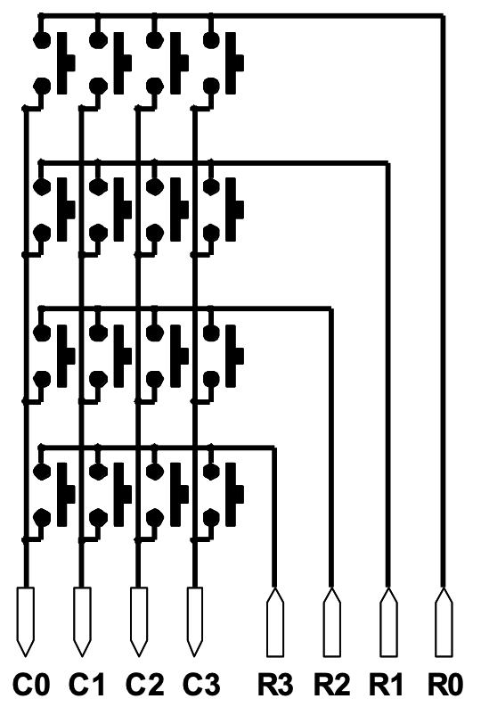

The objective of this experiment is to control and monitor simple peripherals by utilizing a development board. In this case an 8051 microcontroller is used on the development board which is connected to a keypad and a display unit through an 8255 Peripheral Interface adapter. Additionally, with the usage of a source code the system will be able to scan the keypad for any single key press. If a key has been pressed its numerical value must be identified and be displayed to the left-most digit display .
Throughout this experiment the main hardware components that were used are:
Keypad with a 4x4 matrix of keys
4-digit 7-segment display unit
8051 Microcontroller
8255A Peripheral Interface Adapter
Keypad
There are 16 pushbuttons on the keypad. The figure below (Figure 1.) shows the internal layout of the buttons with columns and rows. A multiplexed configuration, such as that seen in the Figure , is popular when using keypads for data entry with a limited number of I/O lines. The microcontroller is directly connected to the "R" row outputs and "C" column inputs using this layout as a guideline. Assume that resistors that are not visible are weakly pulling the C inputs down.

Figure 1: Block Diagram for Keypad Interfacing
The following actions must be taken in sequence to detect when a key has been pressed:
- "1111"bin is used to drive the row outputs and then column values are read.
- If the columns read "0000" no keys have been pressed. In contrast, if any column reads "1" it indicates that a key was pressed. The column containing the “1” Illustrates that the key concerned is one of the four keys along that particular column.
After that the goal is to identify which one of the four keys was pressed as follows:
- While reading the column values the microcontroller is able to drive just one row to the “1” state at a time.
- The column outputs will have a value other than "0000" when the row containing the pressed key is set to "1".
Controlling the Keypad via the 8255
An 8255 device is used to increase the I/O of the 8051 when external memory addressing is utilised because of the limited number of port pins. The row lines (outputs) and columns (inputs) are connected to Port C of the 8255 via the higher nibble of Port C and the lower nibble of Port C, respectively. The ANL instruction generally helps to achieve this. When supply power is provided, the 8255 automatically resets. It is important to first set up the 8255 Control Register with the required bit values in order to properly configure Port C of the 8255. When the device's A1pin and A0pin are set to "11"bin, the Control Register (CR) is accessible. The lower nibble pins of Port C must be configured as inputs, while the upper nibble pins must function as outputs. Furthermore, when A1pin and A0pin are both set to "10", Port C is accessible.
Figure 2: Block Diagram for Keypad and Display Interfacing
Controlling the Display via the 8255
There are four seven-segment units that form the display. Each individual segment can be controlled by sending control words to it. Port A of 8255 is connected to the segment pins a,b,c,..,h (parallel connection) to each one of the display modules. Then, to choose which of the four displays is on at any particular time, Port B's lower nibble is used. A display subroutine can be used to allow the four display digits to show different information simultaneously. The way the subroutine mechanism works is as follows:
The 8051 uses four registers (R0, R1, R2, R3) to store the numerical value (segment code) for each individual display segment. The four display devices are selected one at a time. A display's specific segment code is written to the segment lines when it is active, allowing the proper value to be displayed. The display code of the following display device is used in its place when it is chosen. If this process is completed quickly enough, it looks like each of the four displays is constantly illuminated while displaying the corresponding numerical number.
Program Function
The following actions are being performed that define the function of the program:
1) the contents of the R0 (left most digit), R1, R2 and R3 are constantly written to the display. These registers' contents contain the segment code for the equivalent decimal character.
2) Check for any single key press on the keypad. When a key press has been established the program has to identify the corresponding key that was pressed, and its numerical value used to ensure that the left-most digit displays the accurate value of the key. This applies to the keys “0...9” and “A...E”.
3) Each time a key is pressed, the value of each digit that is being displayed must be shifted by one place to the left. The value of the most significant digit is popped when it is updated with the value shifted (pushed) to the right. Since the registers R0, R1, R2, and R3 hold the value of the digits, their contents must be adjusted with the proper order of operations:
New R3 <= Old R2
New R2 <= Old R1
New R1 <= Old R0
New R0 <= Segment code for new key pressed
4) The display must be set to ensure flicker-free lighting of the characters stored in the R0, R1, R2 and R3 registers, and for that reason the keypad must feature a debounce mechanism.
5) Whenever “F” key is pressed the content of the registers R0, R1, R2, R3 should reset to heir null value (0000 displayed). Then, key presses will once again be displayed as being entered from the display's most-left digit.